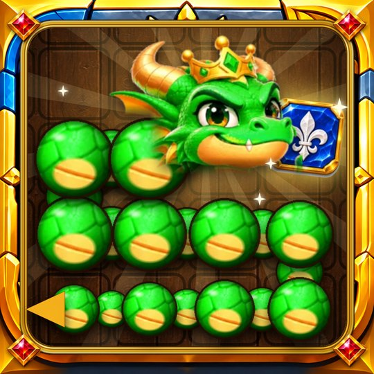

Co oferuje gra?
Rozwiązuj krzyżówki, zdobywaj monety i rozwijaj średniowieczną wioskę. Gra już dostępna na iPhone.
- 120 poziomów i 6 strażników
- Magiczne runy o różnych mocach
- Bez konta, gra offline

Wkrótce na iPhone'a i Androida
Prowadź smoka, zjadaj runy.
Wkrótce na AndroidaSmok nigdy się nie zatrzymuje. Przesuń palcem, by skręcić, zjadaj runy, by rosnąć, i omijaj ściany oraz własne ciało.
120 poziomów w 6 krainach, każdej strzeże boss. Magiczne runy spowalniają czas, zmieniają cię w ducha lub chronią.
Serpent des Runes wkrótce pojawi się w App Store na iPhone'a i na Androidzie. Przycisk pobierania pojawi się u góry tej strony zaraz po premierze.
Rozwiązuj krzyżówki, zdobywaj monety i rozwijaj średniowieczną wioskę. Gra już dostępna na iPhone.